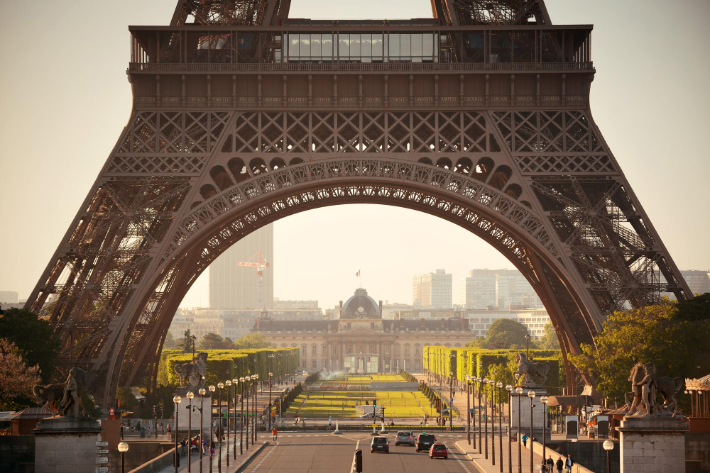
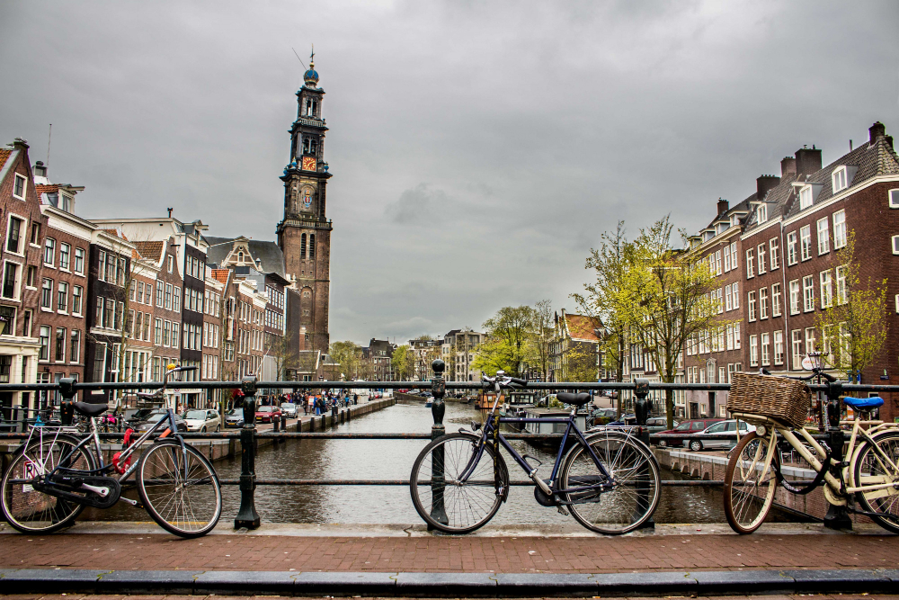

Paris, França
Paris é a cidade do amor, da moda e da gastronomia. Conhecida como a cidade luz, é um dos lugares mais visitados da Europa. A cidade tem muitas atrações turísticas como a Torre Eiffel, o Museu do Louvre, a Catedral de Notre-Dame e o Arco do Triunfo. Além disso, Paris é um lugar perfeito para explorar a cultura francesa, como a culinária, os vinhos e os cafés.

Amsterdã, Holanda
Amsterdã é uma cidade cheia de personalidade, conhecida por seus canais, museus e vida noturna agitada. Entre as atrações turísticas, destacam-se o Museu Van Gogh, a Casa de Anne Frank e o Rijksmuseum. Amsterdã também é um ótimo lugar para experimentar a culinária holandesa e passear de bicicleta pelas ruas charmosas da cidade.

Barcelona, Espanha
Barcelona é uma cidade cheia de vida, com uma arquitetura impressionante e uma rica cultura catalã. A cidade é famosa pela obra-prima de Gaudí, a Sagrada Família, mas também conta com outras atrações turísticas como o Parque Güell e o Bairro Gótico. Barcelona é um ótimo lugar para experimentar a culinária espanhola e relaxar nas praias da cidade.
Londres, Reino Unido
Londres é uma cidade vibrante, com muitas atrações turísticas, como o Palácio de Buckingham, a Torre de Londres e o British Museum. A cidade também é conhecida pela sua cena musical e teatral, com espetáculos de renome mundial nos famosos teatros do West End. Além disso, Londres é um ótimo lugar para experimentar a culinária britânica e fazer compras nas lojas de Oxford Street.